20.3. Testing Documentation¶
20.3.1. Overview¶
To test and validate the ns-3 LTE module, several test suites are provided which are integrated with the ns-3 test framework. To run them, you need to have configured the build of the simulator in this way:
$ ./ns3 configure --enable-tests --enable-modules=lte --enable-examples
$ ./test.py
The above will run not only the test suites belonging to the LTE module, but also those belonging to all the other ns-3 modules on which the LTE module depends. See the ns-3 manual for generic information on the testing framework.
You can get a more detailed report in HTML format in this way:
$ ./test.py -w results.html
After the above command has run, you can view the detailed result for each test by opening the file results.html with a web browser.
You can run each test suite separately using this command:
$ ./test.py -s test-suite-name
For more details about test.py and the ns-3 testing framework, please refer to the ns-3 manual.
20.3.2. Description of the test suites¶
20.3.2.1. Unit Tests¶
20.3.2.1.1. SINR calculation in the Downlink¶
The test suite lte-downlink-sinr
checks that the SINR calculation in
downlink is performed correctly. The SINR in the downlink is calculated for each
RB assigned to data transmissions by dividing the power of the
intended signal from the considered eNB by the sum of the noise power plus all
the transmissions on the same RB coming from other eNBs (the interference
signals):
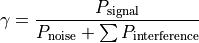
In general, different signals can be active during different periods
of time. We define a chunk as the time interval between any two
events of type either start or end of a waveform. In other words, a
chunk identifies a time interval during which the set of active
waveforms does not change. Let  be the generic chunk,
be the generic chunk,
 its duration and its SINR,
calculated with the above equation. The calculation of the average
SINR to be used for CQI feedback reporting
uses the following formula:
its duration and its SINR,
calculated with the above equation. The calculation of the average
SINR to be used for CQI feedback reporting
uses the following formula:
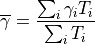
The test suite checks that the above calculation is performed correctly in the simulator. The test vectors are obtained offline by an Octave script that implements the above equation, and that recreates a number of random transmitted signals and interference signals that mimic a scenario where an UE is trying to decode a signal from an eNB while facing interference from other eNBs. The test passes if the calculated values are equal to the test vector within a tolerance of . The tolerance is meant to account for the approximation errors typical of floating point arithmetic.
20.3.2.1.2. SINR calculation in the Uplink¶
The test suite lte-uplink-sinr checks that the SINR calculation in
uplink is performed correctly. This test suite is identical to
lte-downlink-sinr described in the previous section, with the
difference than both the signal and the interference now refer to
transmissions by the UEs, and reception is performed by the eNB.
This test suite recreates a number of random transmitted signals and
interference signals to mimic a scenario where an eNB is trying to
decode the signal from several UEs simultaneously (the ones in the
cell of the eNB) while facing interference from other UEs (the ones
belonging to other cells).
The test vectors are obtained by a dedicated Octave script. The test passes if the calculated values are equal to the test vector within a tolerance of which, as for the downlink SINR test, deals with floating point arithmetic approximation issues.
20.3.2.1.3. E-UTRA Absolute Radio Frequency Channel Number (EARFCN)¶
The test suite lte-earfcn checks that the carrier frequency used
by the LteSpectrumValueHelper class (which implements the LTE spectrum
model) is done in compliance with [TS36101], where the E-UTRA
Absolute Radio Frequency Channel Number (EARFCN) is defined. The test
vector for this test suite comprises a set of EARFCN values and the
corresponding carrier frequency calculated by hand following the
specification of [TS36101]. The test passes if the carrier frequency
returned by LteSpectrumValueHelper is the same as the known value for
each element in the test vector.
20.3.2.2. System Tests¶
20.3.2.2.1. Dedicated Bearer Deactivation Tests¶
The test suite ‘lte-test-deactivate-bearer’ creates test case with single EnodeB and Three UE’s. Each UE consists of one Default and one Dedicated EPS bearer with same bearer specification but with different ARP. Test Case Flow is as follows: Attach UE -> Create Default+Dedicated Bearer -> Deactivate one of the Dedicated bearer
Test case further deactivates dedicated bearer having bearer ID 2(LCID=BearerId+2) of First UE (UE_ID=1) User can schedule bearer deactivation after specific time delay using Simulator::Schedule () method.
Once the test case execution ends it will create DlRlcStats.txt and UlRlcStats.txt. Key fields that need to be checked in statistics are:
|Start | end | Cell ID | IMSI | RNTI | LCID | TxBytes | RxBytes |
Test case executes in three epochs:
In first Epoch (0.04s-1.04s) All UE’s and corresponding bearers gets attached and packet flow over the dedicated bearers activated.
In second Epoch (1.04s-2.04s), bearer deactivation is instantiated, hence User can see relatively less number of TxBytes on UE_ID=1 and LCID=4 as compared to other bearers.
In third Epoch (2.04s-3.04s) since bearer deactivation of UE_ID=1 and LCID=4 is completed, user will not see any logging related to LCID=4.
Test case passes if and only if
IMSI=1 and LCID=4 completely removed in third epoch
No packets seen in TxBytes and RxBytes corresponding to IMSI=1 and LCID=4
If above criteria do not match, the test case is considered to be failed
20.3.2.2.2. Adaptive Modulation and Coding Tests¶
The test suite lte-link-adaptation provides system tests recreating a
scenario with a single eNB and a single UE. Different test cases are created
corresponding to different SNR values perceived by the UE. The aim of the test
is to check that in each test case the chosen MCS corresponds to some known
reference values. These reference values are obtained by
re-implementing in Octave (see src/lte/test/reference/lte_amc.m) the
model described in Section Adaptive Modulation and Coding for the calculation of the
spectral efficiency, and determining the corresponding MCS index
by manually looking up the tables in [R1-081483]. The resulting test vector is
represented in Figure Test vector for Adaptive Modulation and Coding.
The MCS which is used by the simulator is measured by
obtaining the tracing output produced by the scheduler after 4ms (this
is needed to account for the initial delay in CQI reporting). The SINR
which is calculated by the simulator is also obtained using the
LteChunkProcessor interface. The test
passes if both the following conditions are satisfied:
the SINR calculated by the simulator correspond to the SNR of the test vector within an absolute tolerance of ;
the MCS index used by the simulator exactly corresponds to the one in the test vector.
Test vector for Adaptive Modulation and Coding¶
20.3.2.2.3. Inter-cell Interference Tests¶
The test suite lte-interference provides system tests recreating an inter-cell interference scenario with two eNBs, each having a single UE attached to it and employing Adaptive Modulation and Coding both in the downlink and in the uplink. The topology of the scenario is depicted in Figure Topology for the inter-cell interference test. The parameter represents the distance of each UE to the eNB it is attached to, whereas the parameter represent the interferer distance. We note that the scenario topology is such that the interferer distance is the same for uplink and downlink; still, the actual interference power perceived will be different, because of the different propagation loss in the uplink and downlink bands. Different test cases are obtained by varying the and parameters.
Topology for the inter-cell interference test¶
The test vectors are obtained by use of a dedicated octave script (available in src/lte/test/reference/lte_link_budget_interference.m), which does the link budget calculations (including interference) corresponding to the topology of each test case, and outputs the resulting SINR and spectral efficiency. The latter is then used to determine (using the same procedure adopted for Adaptive Modulation and Coding Tests. We note that the test vector contains separate values for uplink and downlink.
20.3.2.2.4. UE Measurements Tests¶
The test suite lte-ue-measurements provides system tests recreating an inter-cell interference scenario identical of the one defined for lte-interference test-suite. However, in this test the quantities to be tested are represented by RSRP and RSRQ measurements performed by the UE in two different points of the stack: the source, which is UE PHY layer, and the destination, that is the eNB RRC.
The test vectors are obtained by the use of a dedicated octave script (available in src/lte/test/reference/lte-ue-measurements.m), which does the link budget calculations (including interference) corresponding to the topology of each test case, and outputs the resulting RSRP and RSRQ. The obtained values are then used for checking the correctness of the UE Measurements at PHY layer. After that, they have to be converted according to 3GPP formatting for the purpose of checking their correctness at eNB RRC level.
20.3.2.2.5. UE measurement configuration tests¶
Besides the previously mentioned test suite, there are 3 other test suites for testing UE measurements: lte-ue-measurements-piecewise-1, lte-ue-measurements-piecewise-2, and lte-ue-measurements-handover. These test suites are more focused on the reporting trigger procedure, i.e. the correctness of the implementation of the event-based triggering criteria is verified here.
In more specific, the tests verify the timing and the content of each measurement reports received by eNodeB. Each test case is an stand-alone LTE simulation and the test case will pass if measurement report(s) only occurs at the prescribed time and shows the correct level of RSRP (RSRQ is not verified at the moment).
20.3.2.2.5.1. Piecewise configuration¶
The piecewise configuration aims to test a particular UE measurements configuration. The simulation script will setup the corresponding measurements configuration to the UE, which will be active throughout the simulation.
Since the reference values are precalculated by hands, several assumptions are made to simplify the simulation. Firstly, the channel is only affected by path loss model (in this case, Friis model is used). Secondly, the ideal RRC protocol is used, and layer 3 filtering is disabled. Finally, the UE moves in a predefined motion pattern between 4 distinct spots, as depicted in Figure UE movement trace throughout the simulation in piecewise configuration below. Therefore the fluctuation of the measured RSRP can be determined more easily.
{kind=link}
UE movement trace throughout the simulation in piecewise configuration¶
The motivation behind the “teleport” between the predefined spots is to introduce drastic change of RSRP level, which will guarantee the triggering of entering or leaving condition of the tested event. By performing drastic changes, the test can be run within shorter amount of time.
Figure Measured RSRP trace of an example Event A1 test case in piecewise configuration below shows the measured RSRP after layer 1 filtering by the PHY layer during the simulation with a piecewise configuration. Because layer 3 filtering is disabled, these are the exact values used by the UE RRC instance to evaluate reporting trigger procedure. Notice that the values are refreshed every 200 ms, which is the default filtering period of PHY layer measurements report. The figure also shows the time when entering and leaving conditions of an example instance of Event A1 (serving cell becomes better than threshold) occur during the simulation.
{kind=link}
Measured RSRP trace of an example Event A1 test case in piecewise configuration¶
Each reporting criterion is tested several times with different threshold/offset parameters. Some test scenarios also take hysteresis and time-to-trigger into account. Figure Measured RSRP trace of an example Event A1 with hysteresis test case in piecewise configuration depicts the effect of hysteresis in another example of Event A1 test.
{kind=link}
Measured RSRP trace of an example Event A1 with hysteresis test case in piecewise configuration¶
Piecewise configuration is used in two test suites of UE measurements. The first one is lte-ue-measurements-piecewise-1, henceforth Piecewise test #1, which simulates 1 UE and 1 eNodeB. The other one is lte-ue-measurements-piecewise-2, which has 1 UE and 2 eNodeBs in the simulation.
Piecewise test #1 is intended to test the event-based criteria which are not dependent on the existence of a neighboring cell. These criteria include Event A1 and A2. The other events are also briefly tested to verify that they are still working correctly (albeit not reporting anything) in the absence of any neighboring cell. Table UE measurements test scenarios using piecewise configuration #1 below lists the scenarios tested in piecewise test #1.
Test # |
Reporting Criteria |
Threshold/Offset |
Hysteresis |
Time-to-Trigger |
|---|---|---|---|---|
1 |
Event A1 |
Low |
No |
No |
2 |
Event A1 |
Normal |
No |
No |
3 |
Event A1 |
Normal |
No |
Short |
4 |
Event A1 |
Normal |
No |
Long |
5 |
Event A1 |
Normal |
No |
Super |
6 |
Event A1 |
Normal |
Yes |
No |
7 |
Event A1 |
High |
No |
No |
8 |
Event A2 |
Low |
No |
No |
9 |
Event A2 |
Normal |
No |
No |
10 |
Event A2 |
Normal |
No |
Short |
11 |
Event A2 |
Normal |
No |
Long |
12 |
Event A2 |
Normal |
No |
Super |
13 |
Event A2 |
Normal |
Yes |
No |
14 |
Event A2 |
High |
No |
No |
15 |
Event A3 |
Zero |
No |
No |
16 |
Event A4 |
Normal |
No |
No |
17 |
Event A5 |
Normal-Normal |
No |
No |
Other events such as Event A3, A4, and A5 depend on measurements of neighbouring cell, so they are more thoroughly tested in Piecewise test #2. The simulation places the nodes on a straight line and instruct the UE to “jump” in a similar manner as in Piecewise test #1. Handover is disabled in the simulation, so the role of serving and neighbouring cells do not switch during the simulation. Table UE measurements test scenarios using piecewise configuration #2 below lists the scenarios tested in Piecewise test #2.
Test # |
Reporting Criteria |
Threshold/Offset |
Hysteresis |
Time-to-Trigger |
|---|---|---|---|---|
1 |
Event A1 |
Low |
No |
No |
2 |
Event A1 |
Normal |
No |
No |
3 |
Event A1 |
Normal |
Yes |
No |
4 |
Event A1 |
High |
No |
No |
5 |
Event A2 |
Low |
No |
No |
6 |
Event A2 |
Normal |
No |
No |
7 |
Event A2 |
Normal |
Yes |
No |
8 |
Event A2 |
High |
No |
No |
9 |
Event A3 |
Positive |
No |
No |
10 |
Event A3 |
Zero |
No |
No |
11 |
Event A3 |
Zero |
No |
Short |
12 |
Event A3 |
Zero |
No |
Super |
13 |
Event A3 |
Zero |
Yes |
No |
14 |
Event A3 |
Negative |
No |
No |
15 |
Event A4 |
Low |
No |
No |
16 |
Event A4 |
Normal |
No |
No |
17 |
Event A4 |
Normal |
No |
Short |
18 |
Event A4 |
Normal |
No |
Super |
19 |
Event A4 |
Normal |
Yes |
No |
20 |
Event A4 |
High |
No |
No |
21 |
Event A5 |
Low-Low |
No |
No |
22 |
Event A5 |
Low-Normal |
No |
No |
23 |
Event A5 |
Low-High |
No |
No |
24 |
Event A5 |
Normal-Low |
No |
No |
25 |
Event A5 |
Normal-Normal |
No |
No |
26 |
Event A5 |
Normal-Normal |
No |
Short |
27 |
Event A5 |
Normal-Normal |
No |
Super |
28 |
Event A5 |
Normal-Normal |
Yes |
No |
29 |
Event A5 |
Normal-High |
No |
No |
30 |
Event A5 |
High-Low |
No |
No |
31 |
Event A5 |
High-Normal |
No |
No |
32 |
Event A5 |
High-High |
No |
No |
One note about the tests with time-to-trigger, they are tested using 3 different values of time-to-trigger: short (shorter than report interval), long (shorter than the filter measurement period of 200 ms), and super (longer than 200 ms). The first two ensure that time-to-trigger evaluation always use the latest measurement reports received from PHY layer. While the last one is responsible for verifying time-to-trigger cancellation, for example when a measurement report from PHY shows that the entering/leaving condition is no longer true before the first trigger is fired.
20.3.2.2.5.2. Handover configuration¶
The purpose of the handover configuration is to verify whether UE measurement configuration is updated properly after a successful handover takes place. For this purpose, the simulation will construct 2 eNodeBs with different UE measurement configuration, and the UE will perform handover from one cell to another. The UE will be located on a straight line between the 2 eNodeBs, and the handover will be invoked manually. The duration of each simulation is 2 seconds (except the last test case) and the handover is triggered exactly at halfway of simulation.
The lte-ue-measurements-handover test suite covers various types of configuration differences. The first one is the difference in report interval, e.g. the first eNodeB is configured with 480 ms report interval, while the second eNodeB is configured with 240 ms report interval. Therefore, when the UE performed handover to the second cell, the new report interval must take effect. As in piecewise configuration, the timing and the content of each measurement report received by the eNodeB will be verified.
Other types of differences covered by the test suite are differences in event and differences in threshold/offset. Table UE measurements test scenarios using handover configuration below lists the tested scenarios.
Test # |
Test Subject |
Initial Configuration |
Post-Handover Configuration |
|---|---|---|---|
1 |
Report interval |
480 ms |
240 ms |
2 |
Report interval |
120 ms |
640 ms |
3 |
Event |
Event A1 |
Event A2 |
4 |
Event |
Event A2 |
Event A1 |
5 |
Event |
Event A3 |
Event A4 |
6 |
Event |
Event A4 |
Event A3 |
7 |
Event |
Event A2 |
Event A3 |
8 |
Event |
Event A3 |
Event A2 |
9 |
Event |
Event A4 |
Event A5 |
10 |
Event |
Event A5 |
Event A4 |
11 |
Threshold/offset |
RSRP range 52 (Event A1) |
RSRP range 56 (Event A1) |
12 |
Threshold/offset |
RSRP range 52 (Event A2) |
RSRP range 56 (Event A2) |
13 |
Threshold/offset |
A3 offset -30 (Event A3) |
A3 offset +30 (Event A3) |
14 |
Threshold/offset |
RSRP range 52 (Event A4) |
RSRP range 56 (Event A4) |
15 |
Threshold/offset |
RSRP range 52-52 (Event A5) |
RSRP range 56-56 (Event A5) |
16 |
Time-to-trigger |
1024 ms |
100 ms |
17 |
Time-to-trigger |
1024 ms |
640 ms |
20.3.2.2.6. Round Robin scheduler performance¶
The test suite lte-rr-ff-mac-scheduler creates different test cases with
a single eNB and several UEs, all having the same Radio Bearer specification. In
each test case, the UEs see the same SINR from the eNB; different test cases are
implemented by using different distance among UEs and the eNB (i.e., therefore
having different SINR values) and different numbers of UEs. The test consists on
checking that the obtained throughput performance is equal among users and
matches a reference throughput value obtained according to the SINR perceived
within a given tolerance.
The test vector is obtained according to the values of transport block
size reported in table 7.1.7.2.1-1 of [TS36213], considering an
equal distribution of the physical resource block among the users
using Resource Allocation Type 0 as defined in Section 7.1.6.1 of
[TS36213]. Let  be the TTI duration,
be the TTI duration,  be the
number of UEs,
be the
number of UEs,  the transmission bandwidth configuration in
number of RBs,
the transmission bandwidth configuration in
number of RBs,  the RBG size,
the RBG size,  the modulation and
coding scheme in use at the given SINR and 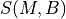 be the
transport block size in bits as defined by 3GPP TS 36.213. We first
calculate the number
the modulation and
coding scheme in use at the given SINR and 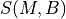 be the
transport block size in bits as defined by 3GPP TS 36.213. We first
calculate the number  of RBGs allocated to each user as
of RBGs allocated to each user as
The reference throughput  in bit/s achieved by each UE is then calculated as
in bit/s achieved by each UE is then calculated as
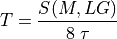
The test passes if the measured throughput matches with the reference throughput within a relative tolerance of 0.1. This tolerance is needed to account for the transient behavior at the beginning of the simulation (e.g., CQI feedback is only available after a few subframes) as well as for the accuracy of the estimator of the average throughput performance over the chosen simulation time (0.4s). This choice of the simulation time is justified by the need to follow the ns-3 guidelines of keeping the total execution time of the test suite low, in spite of the high number of test cases. In any case, we note that a lower value of the tolerance can be used when longer simulations are run.
In Figure fig-lenaThrTestCase1, the curves labeled “RR” represent the test values calculated for the RR scheduler test, as a function of the number of UEs and of the MCS index being used in each test case.
Test vectors for the RR and PF Scheduler in the downlink in a scenario where all UEs use the same MCS.¶
20.3.2.2.7. Proportional Fair scheduler performance¶
The test suite lte-pf-ff-mac-scheduler creates different test cases with
a single eNB, using the Proportional Fair (PF) scheduler, and several UEs, all
having the same Radio Bearer specification. The test cases are grouped in two
categories in order to evaluate the performance both in terms of the adaptation
to the channel condition and from a fairness perspective.
In the first category of test cases, the UEs are all placed at the
same distance from the eNB, and hence all placed in order to have the
same SINR. Different test cases are implemented by using a different
SINR value and a different number of UEs. The test consists on
checking that the obtained throughput performance matches with the
known reference throughput up to a given tolerance. The expected
behavior of the PF scheduler when all UEs have the same SNR is that
each UE should get an equal fraction of the throughput obtainable by a
single UE when using all the resources. We calculate the reference
throughput value by dividing the throughput achievable by a single UE
at the given SNR by the total number of UEs.
Let be the TTI duration, the transmission
bandwidth configuration in number of RBs, the modulation and
coding scheme in use at the given SINR and be the
transport block size as defined in [TS36213]. The reference
throughput in bit/s achieved by each UE is calculated as
The curves labeled “PF” in Figure fig-lenaThrTestCase1 represent the test values calculated for the PF scheduler tests of the first category, that we just described.
The second category of tests aims at verifying the fairness of the PF
scheduler in a more realistic simulation scenario where the UEs have a
different SINR (constant for the whole simulation). In these conditions, the PF
scheduler will give to each user a share of the system bandwidth that is
proportional to the capacity achievable by a single user alone considered its
SINR. In detail, let  be the modulation and coding scheme being used by
each UE (which is a deterministic function of the SINR of the UE, and is hence
known in this scenario). Based on the MCS, we determine the achievable
rate
be the modulation and coding scheme being used by
each UE (which is a deterministic function of the SINR of the UE, and is hence
known in this scenario). Based on the MCS, we determine the achievable
rate  for each user using the
procedure described in Section~ref{sec:pfs}. We then define the
achievable rate ratio
for each user using the
procedure described in Section~ref{sec:pfs}. We then define the
achievable rate ratio  of each user as
of each user as
Let now be the throughput actually achieved by the UE , which
is obtained as part of the simulation output. We define the obtained throughput
ratio of UE as
The test consists of checking that the following condition is verified:
if so, it means that the throughput obtained by each UE over the whole simulation matches with the steady-state throughput expected by the PF scheduler according to the theory. This test can be derived from [Holtzman2000] as follows. From Section 3 of [Holtzman2000], we know that

where  is a constant. By substituting the above into the
definition of given previously, we get
is a constant. By substituting the above into the
definition of given previously, we get
which is exactly the expression being used in the test.
Figure Throughput ratio evaluation for the PF scheduler in a scenario where the UEs have MCS index 28, 24, 16, 12, 6 presents the results obtained in a test case with UEs that are located at a distance from the base station such that they will use respectively the MCS index . From the figure, we note that, as expected, the obtained throughput is proportional to the achievable rate. In other words, the PF scheduler assign more resources to the users that use a higher MCS index.

Throughput ratio evaluation for the PF scheduler in a scenario
where the UEs have MCS index  ¶
¶
20.3.2.2.8. Maximum Throughput scheduler performance¶
Test suites lte-fdmt-ff-mac-scheduler and lte-tdmt-ff-mac-scheduler
create different test cases with a single eNB and several UEs, all having the same
Radio Bearer specification, using the Frequency Domain Maximum Throughput (FDMT)
scheduler and Time Domain Maximum Throughput (TDMT) scheduler respectively.
In other words, UEs are all placed at the
same distance from the eNB, and hence all placed in order to have the
same SNR. Different test cases are implemented by using a different
SNR values and a different number of UEs. The test consists on
checking that the obtained throughput performance matches with the
known reference throughput up to a given tolerance.The expected
behavior of both FDMT and TDMT scheduler when all UEs have the same SNR is that
scheduler allocates all RBGs to the first UE defined in script. This is because
the current FDMT and TDMT implementation always select the first UE to serve when there are
multiple UEs having the same SNR value. We calculate the reference
throughput value for first UE by the throughput achievable of a single UE
at the given SNR, while reference throughput value for other UEs by zero.
Let be the TTI duration, the transmission
bandwidth configuration in number of RBs, the modulation and
coding scheme in use at the given SNR and be the
transport block size as defined in [TS36213]. The reference
throughput in bit/s achieved by each UE is calculated as
20.3.2.2.9. Throughput to Average scheduler performance¶
Test suites lte-tta-ff-mac-scheduler
create different test cases with a single eNB and several UEs, all having the same
Radio Bearer specification using TTA scheduler. Network topology and configurations in
TTA test case are as the same as the test for MT scheduler. More complex test case needs to be
developed to show the fairness feature of TTA scheduler.
20.3.2.2.10. Blind Average Throughput scheduler performance¶
Test suites lte-tdbet-ff-mac-scheduler and lte-fdbet-ff-mac-scheduler create different
test cases with a single eNB and several UEs, all having the same Radio Bearer specification.
In the first test case of lte-tdbet-ff-mac-scheduler and lte-fdbet-ff-mac-scheduler,
the UEs are all placed at the same distance from the eNB, and hence all placed in order to
have the same SNR. Different test cases are implemented by using a different SNR value and
a different number of UEs. The test consists on checking that the obtained throughput performance
matches with the known reference throughput up to a given tolerance. In long term, the expected
behavior of both TD-BET and FD-BET when all UEs have the same SNR is that each UE should get an
equal throughput. However, the exact throughput value of TD-BET and FD-BET in this test case is not
the same.
When all UEs have the same SNR, TD-BET can be seen as a specific case of PF where achievable rate equals to 1. Therefore, the throughput obtained by TD-BET is equal to that of PF. On the other hand, FD-BET performs very similar to the round robin (RR) scheduler in case of that all UEs have the same SNR and the number of UE( or RBG) is an integer multiple of the number of RBG( or UE). In this case, FD-BET always allocate the same number of RBGs to each UE. For example, if eNB has 12 RBGs and there are 6 UEs, then each UE will get 2 RBGs in each TTI. Or if eNB has 12 RBGs and there are 24 UEs, then each UE will get 2 RBGs per two TTIs. When the number of UE (RBG) is not an integer multiple of the number of RBG (UE), FD-BET will not follow the RR behavior because it will assigned different number of RBGs to some UEs, while the throughput of each UE is still the same.
The second category of tests aims at verifying the fairness of the both TD-BET and FD-BET schedulers in a more realistic simulation scenario where the UEs have a different SNR (constant for the whole simulation). In this case, both scheduler should give the same amount of averaged throughput to each user.
Specifically, for TD-BET, let  be the fraction of time allocated to user i in total simulation time,
be the full bandwidth achievable rate for user i and be the achieved throughput of
user i. Then we have:
be the fraction of time allocated to user i in total simulation time,
be the full bandwidth achievable rate for user i and be the achieved throughput of
user i. Then we have:
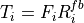
In TD-BET, the sum of for all user equals one. In long term, all UE has the same so that we replace
by . Then we have:
20.3.2.2.11. Token Band Fair Queue scheduler performance¶
Test suites lte-fdtbfq-ff-mac-scheduler and lte-tdtbfq-ff-mac-scheduler create different
test cases for testing three key features of TBFQ scheduler: traffic policing, fairness and traffic
balance. Constant Bit Rate UDP traffic is used in both downlink and uplink in all test cases.
The packet interval is set to 1ms to keep the RLC buffer non-empty. Different traffic rate is
achieved by setting different packet size. Specifically, two classes of flows are created in the
test suites:
Homogeneous flow: flows with the same token generation rate and packet arrival rate
Heterogeneous flow: flows with different packet arrival rate, but with the same token generation rate
In test case 1 verifies traffic policing and fairness features for the scenario that all UEs are placed at the same distance from the eNB. In this case, all Ues have the same SNR value. Different test cases are implemented by using a different SNR value and a different number of UEs. Because each flow have the same traffic rate and token generation rate, TBFQ scheduler will guarantee the same throughput among UEs without the constraint of token generation rate. In addition, the exact value of UE throughput is depended on the total traffic rate:
If total traffic rate <= maximum throughput, UE throughput = traffic rate
If total traffic rate > maximum throughput, UE throughput = maximum throughput / N
Here, N is the number of UE connected to eNodeB. The maximum throughput in this case equals to the rate that all RBGs are assigned to one UE(e.g., when distance equals 0, maximum throughput is 2196000 byte/sec). When the traffic rate is smaller than max bandwidth, TBFQ can police the traffic by token generation rate so that the UE throughput equals its actual traffic rate (token generation rate is set to traffic generation rate); On the other hand, when total traffic rate is bigger than the max throughput, eNodeB cannot forward all traffic to UEs. Therefore, in each TTI, TBFQ will allocate all RBGs to one UE due to the large packets buffered in RLC buffer. When a UE is scheduled in current TTI, its token counter is decreased so that it will not be scheduled in the next TTI. Because each UE has the same traffic generation rate, TBFQ will serve each UE in turn and only serve one UE in each TTI (both in TD TBFQ and FD TBFQ). Therefore, the UE throughput in the second condition equals to the evenly share of maximum throughput.
Test case 2 verifies traffic policing and fairness features for the scenario that each UE is placed at the different distance from the eNB. In this case, each UE has the different SNR value. Similar to test case 1, UE throughput in test case 2 is also depended on the total traffic rate but with a different maximum throughput. Suppose all UEs have a high traffic load. Then the traffic will saturate the RLC buffer in eNodeB. In each TTI, after selecting one UE with highest metric, TBFQ will allocate all RBGs to this UE due to the large RLC buffer size. On the other hand, once RLC buffer is saturated, the total throughput of all UEs cannot increase any more. In addition, as we discussed in test case 1, for homogeneous flows which have the same t_i and r_i, each UE will achieve the same throughput in long term. Therefore, we can use the same method in TD BET to calculate the maximum throughput:
Here, is the maximum throughput. be the full bandwidth achievable rate
for user i. is the number of UE.
When the total traffic rate is bigger than , the UE throughput equals to . Otherwise, UE throughput
equals to its traffic generation rate.
In test case 3, three flows with different traffic rate are created. Token generation rate for each flow is the same and equals to the average traffic rate of three flows. Because TBFQ use a shared token bank, tokens contributed by UE with lower traffic load can be utilized by UE with higher traffic load. In this way, TBFQ can guarantee the traffic rate for each flow. Although we use heterogeneous flow here, the calculation of maximum throughput is as same as that in test case 2. In calculation max throughput of test case 2, we assume that all UEs suffer high traffic load so that scheduler always assign all RBGs to one UE in each TTI. This assumes is also true in heterogeneous flow case. In other words, whether those flows have the same traffic rate and token generation rate, if their traffic rate is bigger enough, TBFQ performs as same as it in test case 2. Therefore, the maximum bandwidth in test case 3 is as same as it in test case 2.
In test case 3, in some flows, token generate rate does not equal to MBR, although all flows are CBR traffic. This is not accorded with our parameter setting rules. Actually, the traffic balance feature is used in VBR traffic. Because different UE’s peak rate may occur in different time, TBFQ use shared token bank to balance the traffic among those VBR traffics. Test case 3 use CBR traffic to verify this feature. But in the real simulation, it is recommended to set token generation rate to MBR.
20.3.2.2.12. Priority Set scheduler performance¶
Test suites lte-pss-ff-mac-scheduler create different test cases with a single eNB and several UEs.
In all test cases, we select PFsch in FD scheduler. Same testing results can also be obtained by using CoItA
scheduler. In addition, all test cases do not define nMux so that TD scheduler in PSS will always select half
of total UE.
In the first class test case of lte-pss-ff-mac-scheduler, the UEs are all placed at the same distance from
the eNB, and hence all placed in order to have the same SNR. Different test cases are implemented
by using a different TBR for each UEs. In each test cases, all UEs have the same
Target Bit Rate configured by GBR in EPS bear setting. The expected behavior of PSS is to guarantee that
each UE’s throughput at least equals its TBR if the total flow rate is blow maximum throughput. Similar
to TBFQ, the maximum throughput in this case equals to the rate that all RBGs are assigned to one UE.
When the traffic rate is smaller than max bandwidth, the UE throughput equals its actual traffic rate;
On the other hand, UE throughput equals to the evenly share of the maximum throughput.
In the first class of test cases, each UE has the same SNR. Therefore, the priority metric in PF scheduler will be determined by past average throughput because each UE has the same achievable throughput in PFsch or same 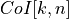 in CoItA. This means that PSS will performs like a TD-BET which allocates all RBGs to one UE in each TTI. Then the maximum value of UE throughput equals to the achievable rate that all RBGs are allocated to this UE.
In the second class of test case of lte-pss-ff-mac-scheduler, the UEs are all placed at the same distance from
the eNB, and hence all placed in order to have the same SNR. Different TBR values are assigned to each UE.
There also exist an maximum throughput in this case. Once total traffic rate is bigger than this threshold,
there will be some UEs that cannot achieve their TBR. Because there is no fading, subband CQIs for each
RBGs frequency are the same. Therefore, in FD scheduler,in each TTI, priority metrics of UE for all RBGs
are the same. This means that FD scheduler will always allocate all RBGs to one user. Therefore, in the
maximum throughput case, PSS performs like a TD-BET. Then we have:

Here, is the maximum throughput. be the full bandwidth achievable rate
for user i. is the number of UE.
20.3.2.2.13. Channel and QoS aware scheduler performance¶
The performance of the Channel and QoS aware scheduler can be tested in the similar way to performance of
Priority Set scheduler when GBR flows are not delay sensitive by measuring if the achieved throughput at
RLC layer is close to the TBR. Having this in mind, the performance of the CQA scheduler is tested by using
the same test cases as the lte-pss-ff-mac-scheduler. Additionally, in [Bbojovic2014] can be found performance
evaluation of CQA scheduler when the GBR flows are delay sensitive by considering different QoE metrics.
20.3.2.2.14. Building Propagation Loss Model¶
The aim of the system test is to verify the integration of the BuildingPathlossModel with the lte module. The test exploits a set of three pre calculated losses for generating the expected SINR at the receiver counting the transmission and the noise powers. These SINR values are compared with the results obtained from a LTE simulation that uses the BuildingPathlossModel. The reference loss values are calculated off-line with an Octave script (/test/reference/lte_pathloss.m). Each test case passes if the reference loss value is equal to the value calculated by the simulator within a tolerance of dB, which accounts for numerical errors in the calculations.
20.3.2.2.15. Physical Error Model¶
The test suite lte-phy-error-model generates different test cases for
evaluating both data and control error models. For what concern the data, the
test consists of six test cases with single eNB and a various number of UEs,
all having the same Radio Bearer specification. Each test is designed for
evaluating the error rate perceived by a specific TB size in order to verify
that it corresponds to the expected values according to the BLER generated for
CB size analog to the TB size. This means that, for instance, the test will
check that the performance of a TB of bits is analogous to the one of
a CB size of bits by collecting the performance of a user which has
been forced the generation of a such TB size according to the distance to eNB.
In order to significantly test the BLER at MAC level, we configured the Adaptive
Modulation and Coding (AMC) module, the LteAmc class, for making it less
robust to channel conditions by using the PiroEW2010 AMC model and configuring
it to select the MCS considering a target BER of 0.03 (instead of the default
value of 0.00005). We note that these values do not reflect the actual BER,
since they come from an analytical bound which does not consider all the
transmission chain aspects; therefore the BER and BLER actually experienced at
the reception of a TB is in general different.
The parameters of the six test cases are reported in the following:
4 UEs placed 1800 meters far from the eNB, which implies the use of MCS 2 (SINR of -5.51 dB) and a TB of 256 bits, that in turns produce a BLER of 0.33 (see point A in figure BLER for tests 1, 2, 3.).
2 UEs placed 1800 meters far from the eNB, which implies the use of MCS 2 (SINR of -5.51 dB) and a TB of 528 bits, that in turns produce a BLER of 0.11 (see point B in figure BLER for tests 1, 2, 3.).
1 UE placed 1800 meters far from the eNB, which implies the use of MCS 2 (SINR of -5.51 dB) and a TB of 1088 bits, that in turns produce a BLER of 0.02 (see point C in figure BLER for tests 1, 2, 3.).
1 UE placed 600 meters far from the eNB, which implies the use of MCS 12 (SINR of 4.43 dB) and a TB of 4800 bits, that in turns produce a BLER of 0.3 (see point D in figure BLER for tests 4, 5.).
3 UEs placed 600 meters far from the eNB, which implies the use of MCS 12 (SINR of 4.43 dB) and a TB of 1632 bits, that in turns produce a BLER of 0.55 (see point E in figure BLER for tests 4, 5.).
1 UE placed 470 meters far from the eNB, which implies the use of MCS 16 (SINR of 8.48 dB) and a TB of 7272 bits (segmented in 2 CBs of 3648 and 3584 bits), that in turns produce a BLER of 0.14, since each CB has CBLER equal to 0.075 (see point F in figure BLER for test 6.).

BLER for tests 1, 2, 3.¶

BLER for tests 4, 5.¶
BLER for test 6.¶
The test condition verifies that in each test case the expected number of
packets received correctly corresponds to a Bernoulli distribution with a
confidence interval of 99%, where the probability of success in each trail is
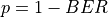 and  is the total number of packets sent.
is the total number of packets sent.
The error model of PCFICH-PDCCH channels consists of 4 test cases with a single UE and several eNBs, where the UE is connected to only one eNB in order to have the remaining acting as interfering ones. The errors on data are disabled in order to verify only the ones due to erroneous decodification of PCFICH-PDCCH. As before, the system has been forced on working in a less conservative fashion in the AMC module for appreciating the results in border situations. The parameters of the 4 tests cases are reported in the following:
2 eNBs placed 1078 meters far from the UE, which implies a SINR of -2.00 dB and a TB of 217 bits, that in turns produce a BLER of 0.007.
3 eNBs placed 1040 meters far from the UE, which implies a SINR of -4.00 dB and a TB of 217 bits, that in turns produce a BLER of 0.045.
4 eNBs placed 1250 meters far from the UE, which implies a SINR of -6.00 dB and a TB of 133 bits, that in turns produce a BLER of 0.206.
5 eNBs placed 1260 meters far from the UE, which implies a SINR of -7.00 dB and a TB of 81 bits, that in turns produce a BLER of 0.343.
The test condition verifies that in each test case the expected number
of packets received correct corresponds to a Bernoulli distribution
with a confidence interval of 99.8%, where the probability of success
in each trail is and is the total number of
packet sent. The larger confidence interval is due to the errors that
might be produced in quantizing the MI and the error curve.
20.3.2.2.16. HARQ Model¶
The test suite lte-harq includes two tests for evaluating the HARQ model and the related extension in the error model. The test consists on checking whether the amount of bytes received during the simulation corresponds to the expected ones according to the values of transport block and the HARQ dynamics. In detail, the test checks whether the throughput obtained after one HARQ retransmission is the expected one. For evaluating the expected throughput the expected TB delivering time has been evaluated according to the following formula:
where  is the probability of receiving with success the HARQ block at the attempt (i.e., the RV with 3GPP naming). According to the scenarios, in the test we always have 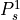 equal to 0.0, while varies in the two tests, in detail:
is the probability of receiving with success the HARQ block at the attempt (i.e., the RV with 3GPP naming). According to the scenarios, in the test we always have 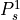 equal to 0.0, while varies in the two tests, in detail:
The expected throughput is calculated by counting the number of transmission slots available during the simulation (e.g., the number of TTIs) and the size of the TB in the simulation, in detail:
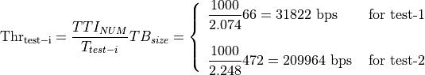
where is the total number of TTIs in 1 second. The test is performed both for Round Robin scheduler. The test passes if the measured throughput matches with the reference throughput within a relative tolerance of 0.1. This tolerance is needed to account for the transient behavior at the beginning of the simulation and the on-fly blocks at the end of the simulation.
20.3.2.2.17. MIMO Model¶
The test suite lte-mimo aims at verifying both the effect of the gain considered for each Transmission Mode on the system performance and the Transmission Mode switching through the scheduler interface. The test consists on checking whether the amount of bytes received during a certain window of time (0.1 seconds in our case) corresponds to the expected ones according to the values of transport block
size reported in table 7.1.7.2.1-1 of [TS36213], similarly to what done for the tests of the schedulers.
The test is performed both for Round Robin and Proportional Fair schedulers. The test passes if the measured throughput matches with the reference throughput within a relative tolerance of 0.1. This tolerance is needed to account for the transient behavior at the beginning of the simulation and the transition phase between the Transmission Modes.
20.3.2.2.18. Antenna Model integration¶
The test suite lte-antenna checks that the AntennaModel integrated with the LTE model works correctly. This test suite recreates a simulation scenario with one eNB node at coordinates (0,0,0) and one UE node at coordinates (x,y,0). The eNB node is configured with an CosineAntennaModel having given orientation and beamwidth. The UE instead uses the default IsotropicAntennaModel. The test checks that the received power both in uplink and downlink account for the correct value of the antenna gain, which is determined offline; this is implemented by comparing the uplink and downlink SINR and checking that both match with the reference value up to a tolerance of which accounts for numerical errors. Different test cases are provided by varying the x and y coordinates of the UE, and the beamwidth and the orientation of the antenna of the eNB.
20.3.2.2.19. RLC¶
Two test suites lte-rlc-um-transmitter and
lte-rlc-am-transmitter check that the UM RLC and the AM RLC
implementation work correctly. Both these suites work by testing RLC
instances connected to special test entities that play the role of the
MAC and of the PDCP, implementing respectively the LteMacSapProvider
and LteRlcSapUser interfaces. Different test cases (i.e., input test
vector consisting of series of primitive calls by the MAC and the
PDCP) are provided that check the behavior in the following cases:
one SDU, one PDU: the MAC notifies a TX opportunity causes the creation of a PDU which exactly contains a whole SDU
segmentation: the MAC notifies multiple TX opportunities that are smaller than the SDU size stored in the transmission buffer, which is then to be fragmented and hence multiple PDUs are generated;
concatenation: the MAC notifies a TX opportunity that is bigger than the SDU, hence multiple SDUs are concatenated in the same PDU
buffer status report: a series of new SDUs notifications by the PDCP is inteleaved with a series of TX opportunity notification in order to verify that the buffer status report procedure is correct.
In all these cases, an output test vector is determine manually from knowledge of the input test vector and knowledge of the expected behavior. These test vector are specialized for UM RLC and AM RLC due to their different behavior. Each test case passes if the sequence of primitives triggered by the RLC instance being tested is exactly equal to the output test vector. In particular, for each PDU transmitted by the RLC instance, both the size and the content of the PDU are verified to check for an exact match with the test vector.
The AM RLC implementation features an additional test suite,
lte-rlc-am-e2e, which test the correct retransmission of RLC PDUs
in presence of channel losses. The test instantiates an RLC AM
transmitter and a receiver, and interposes a channel that randomly
drops packet according to a fixed loss probability. Different test
cases are instantiated using different RngRun values and different
loss probability values. Each test case passes if at the end of the
simulation all SDUs are correctly delivered to the upper layers of the
receiving RLC AM entity.
20.3.2.2.20. RRC¶
The test suite lte-rrc tests the correct functionality of the following aspects:
MAC Random Access
RRC System Information Acquisition
RRC Connection Establishment
RRC Reconfiguration
The test suite considers a type of scenario with four eNBs aligned in a square layout with 100-meter edges. Multiple UEs are located at a specific spot on the diagonal of the square and are instructed to connect to the first eNB. Each test case implements an instance of this scenario with specific values of the following parameters:
number of UEs
number of Data Radio Bearers to be activated for each UE
time
at which the first UE is instructed to start connecting to the eNB
time interval
between the start of connection of UE
the relative position of the UEs on the diagonal of the square, where higher values indicate larger distance from the serving eNodeB, i.e., higher interference from the other eNodeBs
a boolean flag indicating whether the ideal or the real RRC protocol model is used
Each test cases passes if a number of test conditions are positively evaluated for each UE after a delay from the time it started connecting to the eNB. The delay is determined as
where:
is the max delay necessary for the acquisition of System Information. We set it to 90ms accounting for 10ms for the MIB acquisition and 80ms for the subsequent SIB2 acquisition
is the delay for the MAC Random Access (RA) procedure. This depends on preamble collisions as well as on the availability of resources for the UL grant allocation. The total amount of necessary RA attempts depends on preamble collisions and failures to allocate the UL grant because of lack of resources. The number of collisions depends on the number of UEs that try to access simultaneously; we estimated that for a RA success probability, 5 attempts are sufficient for up to 20 UEs, and 10 attempts for up to 50 UEs. For the UL grant, considered the system bandwidth and the default MCS used for the UL grant (MCS 0), at most 4 UL grants can be assigned in a TTI; so for
is the delay required for the transmission of RRC CONNECTION SETUP + RRC CONNECTION SETUP COMPLETED. We consider a round trip delay of 10ms plus considering that 2 RRC packets have to be transmitted and that at most 4 such packets can be transmitted per TTI. In cases where interference is high, we accommodate one retry attempt by the UE, so we double the value and then add on top of it (because the timeout has reset the previously received SIB2).
is the delay required for eventually needed RRC CONNECTION RECONFIGURATION transactions. The number of transactions needed is 1 for each bearer activation. Similarly to what done for , for each transaction we consider a round trip delay of 10ms plus . delay of 20ms.
The base version of the test LteRrcConnectionEstablishmentTestCase
tests for correct RRC connection establishment in absence of channel
errors. The conditions that are evaluated for this test case to pass
are, for each UE:
the RRC state at the UE is CONNECTED_NORMALLY
the UE is configured with the CellId, DlBandwidth, UlBandwidth, DlEarfcn and UlEarfcn of the eNB
the IMSI of the UE stored at the eNB is correct
the number of active Data Radio Bearers is the expected one, both at the eNB and at the UE
for each Data Radio Bearer, the following identifiers match between the UE and the eNB: EPS bearer id, DRB id, LCID
The test variant LteRrcConnectionEstablishmentErrorTestCase is
similar except for the presence of errors in the transmission of a
particular RRC message of choice during the first connection
attempt. The error is obtained by temporarily moving the UE to a far
away location; the time of movement has been determined empirically
for each instance of the test case based on the message that it was
desired to be in error. The test case checks that at least one of the following
conditions is false at the time right before the UE is moved back to
the original location:
the RRC state at the UE is CONNECTED_NORMALLY
the UE context at the eNB is present
the RRC state of the UE Context at the eNB is CONNECTED_NORMALLY
20.3.2.2.21. Initial cell selection¶
The test suite lte-cell-selection is responsible for verifying the Initial Cell Selection procedure. The test is a simulation of a small network of 2 non-CSG cells and 2 non-CSG cells. Several static UEs are then placed at predefined locations. The UEs enter the simulation without being attached to any cell. Initial cell selection is enabled for these UEs, so each UE will find the best cell and attach to it by themselves.
At predefined check points time during the simulation, the test verifies that every UE is attached to the right cell. Moreover, the test also ensures that the UE is properly connected, i.e., its final state is CONNECTED_NORMALLY. Figure Sample result of cell selection test depicts the network layout and the expected result. When a UE is depicted as having 2 successful cell selections (e.g., UE #3 and #4), any of them is accepted by the test case.
{kind=link}
Sample result of cell selection test¶
The figure shows that CSG members may attach to either CSG or non-CSG cells, and simply choose the stronger one. On the other hand, non-members can only attach to non-CSG cells, even when they are actually receiving stronger signal from a CSG cell.
For reference purpose, Table UE error rate in Initial Cell Selection test shows the error rate of each UE when receiving transmission from the control channel. Based on this information, the check point time for UE #3 is done at a later time than the others to compensate for its higher risk of failure.
UE # |
Error rate |
|---|---|
1 |
0.00% |
2 |
1.44% |
3 |
12.39% |
4 |
0.33% |
5 |
0.00% |
6 |
0.00% |
The test uses the default Friis path loss model and without any channel fading model.
20.3.2.2.22. Secondary cell selection¶
The unit test lte-secondary-cell-selection` tests that a UE can attach to
any component carrier (not just the 0-th one) during initial cell selection.
20.3.2.2.23. Handover with multiple component carriers¶
The unit test suite lte-primary-cell-change tests a number of handover
cases between different component carriers, for both the Ideal RRC and the
Real RRC. The following handover cases are tested:
(inter-eNB) eNB to eNB with one component carrier
(inter-eNB) handover between the first carrier of two eNBs
(inter-eNB) handover between the second carrier of one eNB to the first carrier of another eNB
(inter-eNB) handover between the second carrier of one eNB to the second carrier of another eNB
(intra-eNB) three handover cases between component carriers of the same eNB
20.3.2.2.24. GTP-U protocol¶
The unit test suite epc-gtpu checks that the encoding and decoding of the GTP-U
header is done correctly. The test fills in a header with a set of
known values, adds the header to a packet, and then removes the header
from the packet. The test fails if, upon removing, any of the fields
in the GTP-U header is not decoded correctly. This is detected by
comparing the decoded value from the known value.
20.3.2.2.25. S1-U interface¶
Two test suites (epc-s1u-uplink and epc-s1u-downlink) make
sure that the S1-U interface implementation works correctly in
isolation. This is achieved by creating a set of simulation scenarios
where the EPC model alone is used, without the LTE model (i.e.,
without the LTE radio protocol stack, which is replaced by simple CSMA
devices). This checks that the
interoperation between multiple EpcEnbApplication instances in
multiple eNBs and the EpcSgwPgwApplication instance in the SGW/PGW
node works correctly in a variety of scenarios, with varying numbers
of end users (nodes with a CSMA device installed), eNBs, and different
traffic patterns (packet sizes and number of total packets).
Each test case works by injecting the chosen traffic pattern in the
network (at the considered UE or at the remote host for in the uplink or the
downlink test suite respectively) and checking that at the receiver
(the remote host or each considered UE, respectively) that exactly the same
traffic patterns is received. If any mismatch in the transmitted and
received traffic pattern is detected for any UE, the test fails.
20.3.2.2.26. TFT classifier¶
The test suite epc-tft-classifier checks in isolation that the
behavior of the EpcTftClassifier class is correct. This is performed
by creating different classifier instances where different TFT
instances are activated, and testing for each classifier that an
heterogeneous set of packets (including IP and TCP/UDP headers) is
classified correctly. Several test cases are provided that check the
different matching aspects of a TFT (e.g. local/remote IP address, local/remote port) both for uplink and
downlink traffic. Each test case corresponds to a specific packet and
a specific classifier instance with a given set of TFTs. The test case
passes if the bearer identifier returned by the classifier exactly
matches with the one that is expected for the considered packet.
20.3.2.2.27. End-to-end LTE-EPC data plane functionality¶
The test suite lte-epc-e2e-data ensures the correct end-to-end
functionality of the LTE-EPC data plane. For each test case in this
suite, a complete LTE-EPC simulation
scenario is created with the following characteristics:
a given number of eNBs
for each eNB, a given number of UEs
for each UE, a given number of active EPS bearers
for each active EPS bearer, a given traffic pattern (number of UDP packets to be transmitted and packet size)
Each test is executed by transmitting the given traffic pattern both in the uplink and in the downlink, at subsequent time intervals. The test passes if all the following conditions are satisfied:
for each active EPS bearer, the transmitted and received traffic pattern (respectively at the UE and the remote host for uplink, and vice versa for downlink) is exactly the same
for each active EPS bearer and each direction (uplink or downlink), exactly the expected number of packet flows over the corresponding RadioBearer instance
20.3.2.2.28. X2 handover¶
The test suite lte-x2-handover checks the correct functionality of the X2 handover procedure. The scenario being tested is a topology with two eNBs connected by an X2 interface. Each test case is a particular instance of this scenario defined by the following parameters:
the number of UEs that are initially attached to the first eNB
the number of EPS bearers activated for each UE
a list of handover events to be triggered, where each event is defined by: + the start time of the handover trigger + the index of the UE doing the handover + the index of the source eNB + the index of the target eNB
a boolean flag indicating whether the target eNB admits the handover or not
a boolean flag indicating whether the ideal RRC protocol is to be used instead of the real RRC protocol
the type of scheduler to be used (RR or PF)
Each test case passes if the following conditions are true:
at time 0.06s, the test CheckConnected verifies that each UE is connected to the first eNB
for each event in the handover list:
at the indicated event start time, the indicated UE is connected to the indicated source eNB
0.1s after the start time, the indicated UE is connected to the indicated target eNB
0.6s after the start time, for each active EPS bearer, the uplink and downlink sink applications of the indicated UE have achieved a number of bytes which is at least half the number of bytes transmitted by the corresponding source applications
The condition “UE is connected to eNB” is evaluated positively if and only if all the following conditions are met:
the eNB has the context of the UE (identified by the RNTI value retrieved from the UE RRC)
the RRC state of the UE at the eNB is CONNECTED_NORMALLY
the RRC state at the UE is CONNECTED_NORMALLY
the UE is configured with the CellId, DlBandwidth, UlBandwidth, DlEarfcn and UlEarfcn of the eNB
the IMSI of the UE stored at the eNB is correct
the number of active Data Radio Bearers is the expected one, both at the eNB and at the UE
for each Data Radio Bearer, the following identifiers match between the UE and the eNB: EPS bearer id, DRB id, LCID
20.3.2.2.29. Automatic X2 handover¶
The test suite lte-x2-handover-measures checks the correct functionality of the handover
algorithm. The scenario being tested is a topology with two, three or four eNBs connected by
an X2 interface. The eNBs are located in a straight line in the X-axes. A UE moves along the
X-axes going from the neighborhood of one eNB to the next eNB. Each test case is a particular
instance of this scenario defined by the following parameters:
the number of eNBs in the X-axes
the number of UEs
the number of EPS bearers activated for the UE
a list of check point events to be triggered, where each event is defined by: + the time of the first check point event + the time of the last check point event + interval time between two check point events + the index of the UE doing the handover + the index of the eNB where the UE must be connected
a boolean flag indicating whether UDP traffic is to be used instead of TCP traffic
the type of scheduler to be used
the type of handover algorithm to be used
a boolean flag indicating whether handover is admitted by default
a boolean flag indicating whether the ideal RRC protocol is to be used instead of the real RRC protocol
The test suite consists of many test cases. In fact, it has been one of the most time-consuming test suite in ns-3. The test cases run with some combination of the following variable parameters:
number of eNBs: 2, 3, 4;
number of EPS bearers: 0, 1, 2;
RRC: ideal, real (see RRC protocol models);
MAC scheduler: round robin, proportional fair (see The FemtoForum MAC Scheduler Interface); and
handover algorithm: A2-A4-RSRQ, strongest cell (see Handover algorithm).
Each test case passes if the following conditions are true:
at time 0.08s, the test CheckConnected verifies that each UE is connected to the first eNB
for each event in the check point list:
at the indicated check point time, the indicated UE is connected to the indicated eNB
0.5s after the check point, for each active EPS bearer, the uplink and downlink sink applications of the UE have achieved a number of bytes which is at least half the number of bytes transmitted by the corresponding source applications
The condition “UE is connected to eNB” is evaluated positively if and only if all the following conditions are met:
the eNB has the context of the UE (identified by the RNTI value retrieved from the UE RRC)
the RRC state of the UE at the eNB is CONNECTED_NORMALLY
the RRC state at the UE is CONNECTED_NORMALLY
the UE is configured with the CellId, DlBandwidth, UlBandwidth, DlEarfcn and UlEarfcn of the eNB
the IMSI of the UE stored at the eNB is correct
the number of active Data Radio Bearers is the expected one, both at the eNB and at the UE
for each Data Radio Bearer, the following identifiers match between the UE and the eNB: EPS bearer id, DRB id, LCID
20.3.2.2.30. Handover delays¶
Handover procedure consists of several message exchanges between UE, source
eNodeB, and target eNodeB over both RRC protocol and X2 interface. Test suite
lte-handover-delay verifies that this procedure consistently spends the
same amount of time.
The test suite will run several handover test cases. Each test case is an individual simulation featuring a handover at a specified time in simulation. For example, the handover in the first test case is invoked at time +0.100s, while in the second test case it is at +0.101s. There are 10 test cases, each testing a different subframe in LTE. Thus the last test case has the handover at +0.109s.
The simulation scenario in the test cases is as follow:
EPC is enabled
2 eNodeBs with circular (isotropic) antenna, separated by 1000 meters
1 static UE positioned exactly in the center between the eNodeBs
no application installed
no channel fading
default path loss model (Friis)
0.300s simulation duration
The test case runs as follow. At the beginning of the simulation, the UE is attached to the first eNodeB. Then at the time specified by the test case input argument, a handover request will be explicitly issued to the second eNodeB. The test case will then record the starting time, wait until the handover is completed, and then record the completion time. If the difference between the completion time and starting time is less than a predefined threshold, then the test passes.
A typical handover in the current ns-3 implementation takes 4.2141 ms when using Ideal RRC protocol model, and 19.9283 ms when using Real RRC protocol model. Accordingly, the test cases use 5 ms and 20 ms as the maximum threshold values. The test suite runs 10 test cases with Ideal RRC protocol model and 10 test cases with Real RRC protocol model. More information regarding these models can be found in Section RRC protocol models.
The motivation behind using subframes as the main test parameters is the fact that subframe index is one of the factors for calculating RA-RNTI, which is used by Random Access during the handover procedure. The test cases verify this computation, utilizing the fact that the handover will be delayed when this computation is broken. In the default simulation configuration, the handover delay observed because of a broken RA-RNTI computation is typically 6 ms.
20.3.2.2.31. Handover failure¶
The test suite lte-handover-failure tests the proper operation of a number
of handover failure cases by inducing the conditions leading to the following
eight failure modes:
Maximum number of RACH transmissions exceeded from UE to target eNB
Non-allocation of non-contention-based preamble at the target eNB, due to the maximum number reached
HANDOVER JOINING timeout before reception of RRC CONNECTION RECONFIGURATION at source eNB
HANDOVER JOINING timeout before completion of non-contention RACH process to target eNB
HANDOVER JOINING timeout before reception of RRC CONNECTION RECONFIGURATION COMPLETE at target eNB
HANDOVER LEAVING timeout before reception of RRC CONNECTION RECONFIGURATION at source eNB
HANDOVER LEAVING timeout before completion of non-contention RACH process to target eNB
HANDOVER LEAVING timeout before reception of RRC CONNECTION RECONFIGURATION COMPLETE attarget eNB
Both Ideal and Real RRC models are checked by this test suite.
20.3.2.2.32. Selection of target cell in handover algorithm¶
eNodeB may utilize Handover algorithm to automatically create handover decisions during simulation. The decision includes the UE which should do the handover and the target cell where the UE should perform handover to.
The test suite lte-handover-target verifies that the handover algorithm is
making the right decision, in particular, in choosing the right target cell. It
consists of several short test cases for different network topology (2×2 grid
and 3×2 grid) and types of handover algorithm (the A2-A4-RSRQ handover algorithm
and the strongest cell handover algorithm).
Each test case is a simulation of a micro-cell environment with the following parameter:
EPC is enabled
several circular (isotropic antenna) micro-cell eNodeBs in a rectangular grid layout, with 130 m distance between each adjacent point
1 static UE, positioned close to and attached to the source cell
no control channel error model
no application installed
no channel fading
default path loss model (Friis)
1s simulation duration
To trigger a handover, the test case “shutdowns” the source cell at +0.5s simulation time. Figure lte-handover-target test scenario in a 2×2 grid below illustrates the process. This is done by setting the source cell’s Tx power to a very low value. As a result, the handover algorithm notices that the UE deserves a handover and several neighboring cells become candidates of target cell at the same time.
{kind=link}
lte-handover-target test scenario in a 2×2 grid¶
The test case then verifies that the handover algorithm, when faced with more than one options of target cells, is able to choose the right one.
20.3.2.2.33. Downlink Power Control¶
The test suite lte-downlink-power-control checks correctness of Downlink
Power Control in three different ways:
LteDownlinkPowerControlSpectrumValue test case check if
LteSpectrumValueHelper::CreateTxPowerSpectralDensityis creating correct spectrum value for PSD for downlink transmission. The test vector contain EARFCN, system bandwidth, TX power, TX power for each RB, active RBs, and expected TxPSD. The test passes if TxPDS generated byLteSpectrumValueHelper::CreateTxPowerSpectralDensityis equal to expected TxPSD.LteDownlinkPowerControlTestCase test case check if TX power difference between data and control channel is equal to configured PdschConfigDedicated::P_A value. TX power of control channel is measured by
LteTestSinrChunkProcessoradded toRsPowerChunkProcessorlist in UE DownlinkSpectrumPhy. Tx power of data channel is measured in similar way, but it had to be implemented. NowLteTestSinrChunkProcessoris added toDataPowerChunkProcessorlist in UE DownlinkSpectrumPhy. Test vector contain a set of all available P_A values. Test pass if power difference equals P_A value.LteDownlinkPowerControlRrcConnectionReconfiguration test case check if RrcConnectionReconfiguration is performed correctly. When FR entity gets UE measurements, it immediately calls function to change P_A value for this UE and also triggers callback connected with this event. Then, test check if UE gets RrcConnectionReconfiguration message (it trigger callback). Finally, it checks if eNB receive RrcConnectionReconfigurationCompleted message, what also trigger callback. The test passes if all event have occurred. The test is performed two times, with IdealRrcProtocol and with RealRrcProtocol.
20.3.2.2.34. Uplink Power Control Tests¶
UE uses Uplink Power Control to automatically change Tx Power level for Uplink Physical Channels. Tx Power is computed based on path-loss, number of RB used for transmission, some configurable parameters and TPC command from eNB.
The test suite lte-uplink-power-control verifies if Tx Power is computed correctly.
There are three different test cases:
LteUplinkOpenLoopPowerControlTestCase test case checks Uplink Power Control functionality in Open Loop mechanism. UE is attached to eNB and is transmitting data in Downlink and Uplink. Uplink Power Control with Open Loop mechanism is enabled and UE changes position each 100 ms. In each position Uplink Power Control entity is calculating new Tx Power level for all uplink channels. These values are traced and test passes if Uplink Tx Power for PUSCH, PUCCH and SRS in each UE position are equal to expected values.
LteUplinkClosedLoopPowerControlAbsoluteModeTestCase test case checks Uplink Power Control functionality with Closed Loop mechanism and Absolute Mode enabled. UE is attached to eNB and is transmitting data in Downlink and Uplink. Uplink Power Control with Closed Loop mechanism and Absolute Mode is enabled. UE is located 100 m from eNB and is not changing its position. LteFfrSimple algorithm is used on eNB side to set TPC values in DL-DCI messages. TPC configuration in eNB is changed every 100 ms, so every 100 ms Uplink Power Control entity in UE should calculate different Tx Power level for all uplink channels. These values are traced and test passes if Uplink Tx Power for PUSCH, PUCCH and SRS computed with all TCP values are equal to expected values.
LteUplinkClosedLoopPowerControlAccumulatedModeTestCase test case checks Closed Loop Uplink Power Control functionality with Closed Loop mechanism and Accumulative Mode enabled. UE is attached to eNB and is transmitting data in Downlink and Uplink. Uplink Power Control with Closed Loop mechanism and Accumulative Mode is enabled. UE is located 100 m from eNB and is not changing its position. As in above test case, LteFfrSimple algorithm is used on eNB side to set TPC values in DL-DCI messages, but in this case TPC command are set in DL-DCI only configured number of times, and after that TPC is set to be 1, what is mapped to value of 0 in Accumulative Mode (TS36.213 Table 5.1.1.1-2). TPC configuration in eNB is changed every 100 ms. UE is accumulating these values and calculates Tx Power levels for all uplink channels based on accumulated value. If computed Tx Power level is lower than minimal UE Tx Power, UE should transmit with its minimal Tx Power. If computed Tx Power level is higher than maximal UE Tx Power, UE should transmit with its maximal Tx Power. Tx Power levels for PUSCH, PUCCH and SRS are traced and test passes if they are equal to expected values.
20.3.2.2.35. Frequency Reuse Algorithms¶
The test suite lte-frequency-reuse contain two types of test cases.
First type of test cases check if RBGs are used correctly according to FR algorithm
policy. We are testing if scheduler use only RBGs allowed by FR configuration. To
check which RBGs are used LteSimpleSpectrumPhy is attached to Downlink Channel.
It notifies when data downlink channel transmission has occurred and pass signal
TxPsd spectrum value to check which RBs were used for transmission. The test vector
comprise a set of configuration for Hard and Strict FR algorithms (there is no point
to check other FR algorithms in this way because they use entire cell bandwidth).
Test passes if none of not allowed RBGs are used.
Second type of test cases check if UE is served within proper sub-band and with proper
transmission power. In this test scenario, there are two eNBs.There are also two UEs
and each eNB is serving one. One uses Frequency Reuse algorithm and second one does not.
Second eNB is responsible for generating interferences in whole system bandwidth.
UE served by first eNB is changing position each few second (rather slow because time is
needed to report new UE Measurements). To check which RBGs are used for this UE
LteSimpleSpectrumPhy is attached to Downlink Channel. It notifies when data
downlink channel transmission in cell 1 has occurred and pass signal TxPsd spectrum value
to check which RBs were used for transmission and their power level.
The same approach is applied in Uplink direction and second LteSimpleSpectrumPhy
is attached to Uplink Channel. Test passes if UE served by eNB with FR algorithm
is served in DL and UL with expected RBs and with expected power level.
Test vector comprise a configuration for Strict FR, Soft FR, Soft FFR, Enhanced FFR.
Each FR algorithm is tested with all schedulers, which support FR (i.e. PF, PSS, CQA,
TD-TBFQ, FD-TBFQ). (Hard FR do not use UE measurements, so there is no point to perform
this type of test for Hard FR).
Test case for Distributed FFR algorithm is quite similar to above one, but since eNBs need
to exchange some information, scenario with EPC enabled and X2 interfaces is considered.
Moreover, both eNB are using Distributed FFR algorithm. There are 2 UE in first cell,
and 1 in second cell. Position of each UE is changed (rather slow because time is
needed to report new UE Measurements), to obtain different result from calculation in
Distributed FFR algorithm entities. To check which RBGs are used for UE transmission
LteSimpleSpectrumPhy is attached to Downlink Channel. It notifies when data
downlink channel transmission has occurred and pass signal TxPsd spectrum value
to check which RBs were used for transmission and their power level.
The same approach is applied in Uplink direction and second LteSimpleSpectrumPhy
is attached to Uplink Channel.
Test passes if UE served by eNB in cell 2, is served in DL and UL with expected RBs
and with expected power level. Test vector comprise a configuration for Distributed FFR.
Test is performed with all schedulers, which support FR (i.e. PF, PSS, CQA,
TD-TBFQ, FD-TBFQ).
20.3.2.2.36. Inter-cell Interference with FR algorithms Tests¶
The test suite lte-interference-fr is very similar to lte-interference.
Topology (Figure Topology for the inter-cell interference test) is the same and test checks
interference level. The difference is that, in this test case Frequency Reuse algorithms
are enabled and we are checking interference level on different RBGs (not only on one).
For example, when we install Hard FR algorithm in eNbs, and first half of system bandwidth
is assigned to one eNb, and second half to second eNb, interference level should be much
lower compared to legacy scenario. The test vector comprise a set of configuration for
all available Frequency Reuse Algorithms. Test passes if calculated SINR on specific
RBs is equal to these obtained by Octave script.
20.3.2.2.37. Carrier aggregation test¶
The test suite lte-carrier-aggregation is a system test program that creates different test
cases with a single eNB and several UEs, all having the same radio bearer specification. Different
test cases are implemented by using different SINR values and different numbers of UEs. eNBs and UEs
are configured to use the secondary carrier and the component carrier manager is configured to
split the data uniformly between primary and secondary carrier. The test consists of checking that
the throughput obtained over the different carriers are equal considering a given tolerance. For more
details about this test, see the section Carrier aggregation usage example.
20.3.2.2.38. Carrier aggregation test for eNB and UE configuration¶
The test suite carrier-aggregation-config-test is a system test program, which verifies the
following two cases:
When carrier aggregation is enabled and UE carriers configuration is different than the default configuration done in LteHelper, we check that the UE(s) is configured properly once it receives RRC Connection Reconfiguration message from eNB.
A user can configure 2 or more eNBs and UEs with different configuration parameters, i.e., each eNB and UE can have different EARFCN and Bandwidths and a UE connects to an eNB with similar DL EARFCN. In this test, we check with CA enabled but the end results will be the same if carrier aggregation is not enabled and we have more than one eNBs and UEs with different configurations.
Since, we do not need EPC to test the configuration, this test only simulates the LTE radio access with RLC SM.
There are two test cases, Test 1 tests that the UE is configured properly after receiving RRC Connection Reconfiguration
message from the eNB, which will overwrite UE default configuration done in LteHelper for the sake of
creating PHY and MAC instances equal to the number of component carriers. Test 2 tests that every eNB or UE in a
simulation scenario can be configured with different EARFCNs and Bandwidths. For both test cases, it also counts
the number of times the hooked trace source SCarrierConfigured get triggered. As, it reflects how many UEs
got attached to their respective eNB. If the count is not equal to the number of UEs in the scenario, the test fails,
which could be the result of improper UE configuration.
20.3.2.2.39. Radio link failure Test¶
The test suite lte-radio-link-failure is a system test, which tests the
radio link failure functionality using Ideal and Real RRC protocols.
In particular, it tests the following to verify the Radio link
Failure (RLF) implementation.
The state and the configuration of the UE while it is connected to the eNB.
The state of the UE while T310 timer is running at the UE.
The number of out-of-sync and in-synch indications received.
The state of the UE before the simulation end.
The UE context existence at the eNB before the simulation end.
This test simulates only one static UE with EPC performing downlink and uplink communication in the following two scenarios:
20.3.2.2.39.1. One eNB using Ideal and Real RRC¶
RLF scenario with one eNB¶
In this scenario, the UE is initially placed near to the eNB, and on the following instances above conditions are verified against the expected outcome.
At 0.3 sec: It verifies that the UE is well connected, i.e., it is in “CONNECTED_NORMALLY” state, and is attached to the eNB with cell id 1. It also checks for the match between the configuration of the UE and the UE context at the eNB, e.g., IMSI, bandwidth, D/UL EARFCN, number of bearers and the bearer IDs. The miss match would result in the test suite failure.
At 0.4 sec: The UE jumps far away from the eNB, which causes the DL SINR at the UE to fall below -5 dB. In result, the UE PHY after monitoring the SINR for 20 consecutive frames will send a notification to the UE RRC. In this test, the N310 counter is set to 1; thus, the UE RRC will start the T310 (set to 1 sec) timer upon the first notification from the PHY layer.
At 1 sec: At this stage, it is expected that the T310 timer is still running, and the UE is connected to the eNB.
Upon RLF: It is expected that the UE RRC will start the T310 timer upon reaching the configured, i.e., N310 = 1 number of notification from the eNB. The RRC will receive no in-sync indication since the UE stays at far away position.
Before the end of simulation: The expected behavior is that the UE state will be in “IDLE_CELL_SEARCH” since there is no eNB available where it has jumped. Moreover, the deletion of the UE context from the eNB is also verified.
20.3.2.2.39.2. Two eNBs using Ideal and Real RRC¶
RLF scenario with two eNBs¶
In this scenario, the only difference is the addition of a second eNB near the position where the UE jumps away. Therefore, except the outcome before the end of the simulation, all the outcomes are similar to that we expected in the first scenario.
Before the end of simulation: It is expected that the UE after the RLF will connect to the second eNB, i.e., it will be in “CONNECTED_NORMALLY” state, and its context exists in the second eNB.